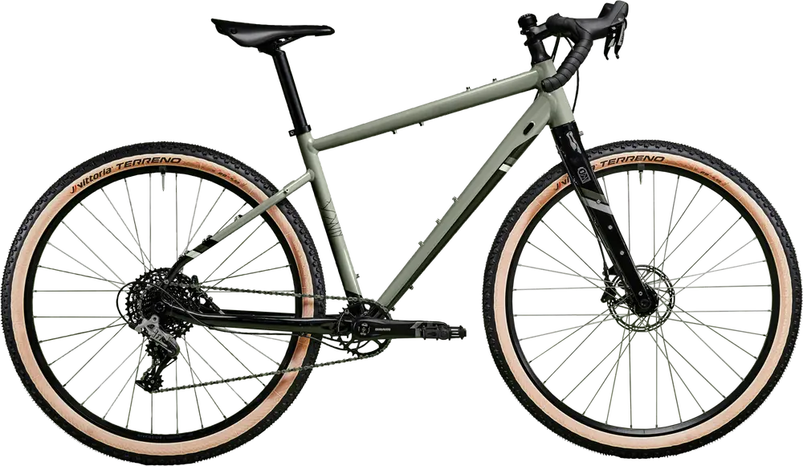

Het stuur
En de mogelijke bagage opties
Voorop mijn fiets hangt een [merknaam en type]
waarmee ik sinds de aanschaf van Olivia al mee rij.
Curabitur vel turpis nec libero gravida interdum.
Nam tincidunt libero sed justo aliquet, at tincidunt lorem.
Wat heb ik aan mijn stuur
- Item één
- Item twee
- Item drie
Mijn tassen
Dit is een beschrijving van de tassen die ik meeneem.
Ze variëren per reis en weersomstandigheden.
- Tas 1
- Tas 2
- Tas 3
Frame Bag

De frame bag is ideaal voor zware spullen zoals gereedschap of eten. Alles blijft laag in het frame en beïnvloedt je balans minimaal.
Voorvork en accessoires
De vork biedt ruimte voor extra cages of dry bags. Perfect om gewicht voorop de fiets te dragen.
Frame
Het hart van de fiets. Hier draag ik de meeste bagage in tassen of bidons.
- Sterk en licht aluminium
- Bevestigingspunten voor bidonhouders
- Stabiel tijdens lange ritten
Zadel en zadeltas
De zadeltas gebruik ik voor lichte, maar volumineuze spullen zoals kleding of slaapspullen.
Ketting en aandrijving

Betrouwbaar schakelen is essentieel tijdens lange reizen. Regelmatig schoonmaken voorkomt slijtage.
Pedaal
Ik gebruik stevige flat pedals met grip, ideaal voor bikepacking.
Voordeel: ik kan op gewone schoenen fietsen, handig tijdens stops.
Voorwiel
Stevig wiel met 32 spaken, geschikt voor onverharde wegen.
Achterwiel
Het achterwiel draagt de meeste belasting. Hier monteer ik ook de aandrijving en vaak extra bagage.